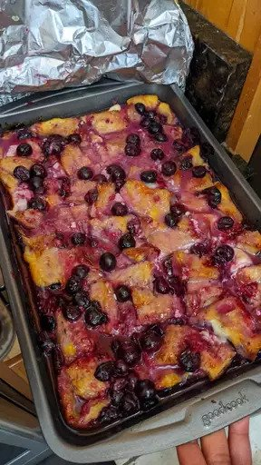

Overnight blueberry french toast recipe

Description
This delicious and fast dessert will whisk away your whole family to a world of decadent french toast and sweet blueberries
Ingredients
French toast
- 12 slices day-old bread, cut into 1-inch cubes
- 2 (8 ounce) packages cream cheese, cut into 1 inch cubes
- 1 cup fresh blueberries
- 12 eggs, beaten
- 2 cups milk
- 1 teaspoon vanilla extract
- ⅓ cup maple syrup
Blueberry sauce
- 1 cup white sugar
- 1 cup water
- 2 tablespoons cornstarch
- 1 cup fresh blueberries
- 1 tablespoon butter
Preparation
- Prepare casserole: Lightly grease a 9x13-inch baking dish. Arrange 1/2 of the bread cubes in the dish and top with cream cheese cubes. Sprinkle blueberries over the cream cheese, then top with remaining bread cubes.
- Whisk eggs, milk, vanilla extract, and syrup together in a large bowl until well-combined; pour over the bread cubes. Cover and refrigerate overnight.
- Remove casserole from the refrigerator about 30 minutes before baking. Preheat the oven to 350 degrees F (175 degrees C).
- Bake casserole in the preheated oven, covered, for 30 minutes. Uncover, and continue baking until center is firm and surface is lightly browned, about 25 to 30 minutes.
- Meanwhile, prepare blueberry sauce: Mix sugar, water, and cornstarch together in a medium saucepan; bring to a boil and cook, stirring constantly, 3 to 4 minutes. Stir in blueberries, reduce heat to low, and simmer until all the blueberries burst, about 10 minutes. Stir in butter.
- Serve portions of casserole on plates and pour warm syrup over top.